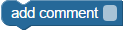
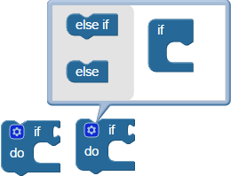
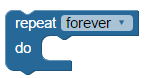
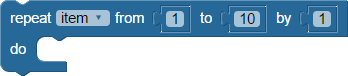

BlocklyProp reference for CONTROL blocks


 Compatible with all Propeller Board types (except Scribbler Robot).
Compatible with all Propeller Board types (except Scribbler Robot).
The CONTROL blocks in BlocklyProp are used to build the structure of a Blockly program. Use these blocks to repeat, loop, make descisions, build and use functions, and start up new processors.
add comment

The add comment block will add a comment or note to the program. This block has no effect on the way the program runs. It is simply a way to write a note in the program to help others understand the program.
if...do

The if...do block is for decision-making: if the condition inserted at right is true, the enclosed code in the do section will execute. If the condition is not true, the do section will be skipped over and not executed.
The if...do block is a mutating block, indicated by the gear that can be clicked. It allows the block to include multiple “else” and “else if” conditions. If the first condition is not true, its enclosed code will be skipped and the next else if or else conditions will be evaluated and executed if true, before exiting the outer block.
If...then...elseif vs switch...case. The former is more familiar to many programs, but sometimes the latter is a better fit. Here's an example:
if...then always resolves the attached condition to true (1) or false (0). Imagine a program that needs to determine which button is pressed on a remote. if...then would be like trying to get information from a person who will only answer yes or no. Imagine "Did you press button 16? No? OK, then did you press button 17? No? Okay, well, did you press Button 18? Really? Okay, I'll keep trying..." You may have to ask a lot of questions until you get a "yes" answer and know which action to take.
switch...case always resolves the attached condition to a number. So, instead, you can simply say "What button did you press?" and then go straight to the correct action without further delay. So if...then is a great fit if you need to evaluate a series of conditions and figure out which one is happening. And switch...case is a great fit when you have a variable or equation determining which action to take from a list of numbered choices.
conditional repeat

The conditional repeat block creates a loop that, depending on the option chosen in the menu, repeats forever, __ x times, until __, or while __. With the exception of forever, each of the other options require a condition to be added that indicates when the loop should end.
- repeat forever: loops forever. Only a break block will escape the loop and move on to the rest of the program.
- repeat __x times: put a block in here to provide the number of times you want the loop to repeat before moving on. Block options are anything that resolve to a number, such as number value, math operation, random, or use variable.
- repeat until__: put a block in here with a condition to test. Code inside the conditional repeat will run until that condition is true (any number other than 0).
- repeat while__: put a block in here with a condition to test. Code inside the conditional repeat will run while that condition is true (any number other than 0).
repeat item

The repeat item block creates a loop that repeats a certain number of times, starting with the from__ value and ending with the end__ value. To take larger steps between the start and end values, increase the by__ value.
Caution: If you are using a variable you already created for the repeat item, this block will reset it to be equal to the from__ value and it will keep changing the value of the variable each time it loops.
switch...case


The switch...case block looks at the value of the item attached at switch, jumps down to its matching case, and executes the code enclosed in that case's do section. Click the gear to add additional case conditions. The break option is selected by default. If it is not selected, the program will continue to execute the code enclosed by the cases below it until it runs into a checked break. If a default is provided, it will excecute the code enclosed in the default's do section if none of the other cases match switch's value.
Read about if...then...elseif vs switch...case above.
break
The break block will exit a loop and proceed to the next block in the program.
pause

The pause block forces the program to halt and wait for a specified amount of time (in milliseconds) before continuing on to the next block.
new processor

 Each instance of this block lauches a processor automatically.
Each instance of this block lauches a processor automatically.
The new processor block launches a function into its own processor (cog). There are up to 7 processors available on the Propeller. See the BlocklyProp Function and Multicore tutorial for details. Here are some tips for using the new processor block:
- Only a single run function block can be placed inside this block.
- Do not use functions that contain Terminal blocks; Terminal blocks and functions containing Terminal blocks can only run from the main program.
- Some other blocks also launch their own processor automatically—look for the icon. Be mindful that a total of 7 processors can be launched from one program.
return
The return block may be placed in an if...do statement inside of a function, to conditionally exit that function early and continue with the rest of the program. A return block is actually not necessary as the last item enclosed by a define function block.